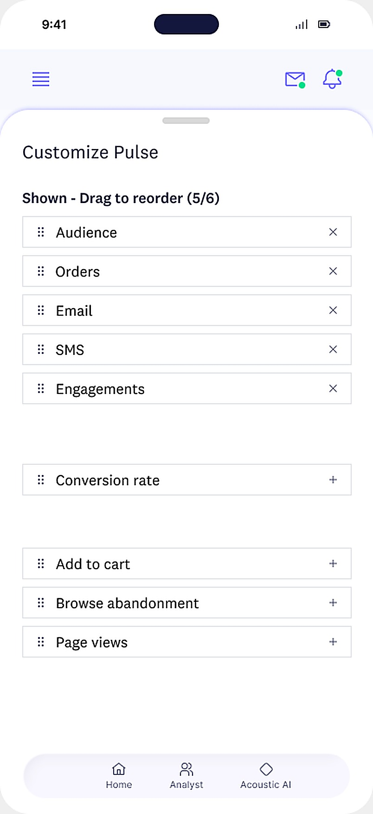
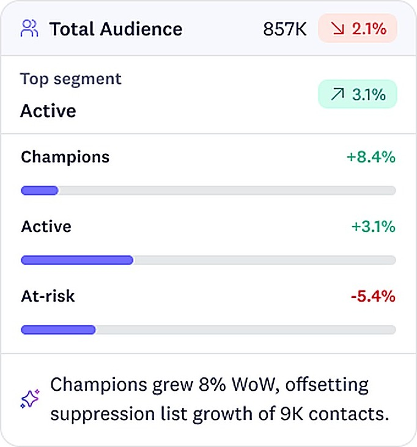
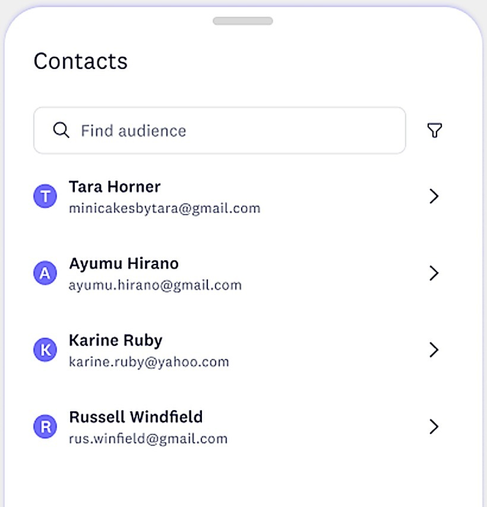
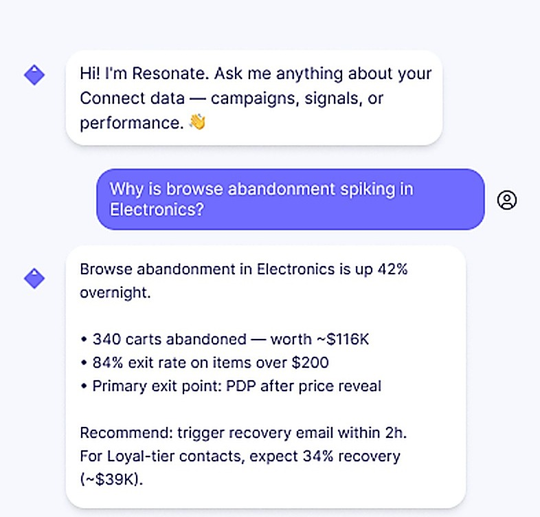

Pulse
mobile app
3.2×
More frequent check-ins from analysts and execs across the week
68%
Of weekly users asked Resonate at least one follow-up question
<2 min
Median time from notification to an understood insight, on mobile
5
Connect modules distilled into one glanceable, customizable feed
Overview
Acoustic Connect is a desktop-first platform, which is a problem for the analysts and executives who actually need it most between meetings, on a factory floor, on the train home. Pulse is the mobile companion that brings the parts of Connect worth checking on the go: today's AI brief, the metrics a person actually tracks, their audience segments and contacts, and a conversational assistant for the follow-up question.
I designed Pulse as a standalone iOS app rather than a shrunk-down version of the desktop dashboard. That meant deciding, screen by screen, what deserved a place on a phone and what didn't and building a new interaction model, the AI Brief and the Resonate assistant, for the moments where a full report isn't the right tool.
The challenge
One dashboard doesn't fit an exec and an analyst, let alone a phone screen
Connect's desktop dashboard is comprehensive by design, built for someone who has twenty minutes and a big monitor. Neither of those things exist on a phone. Cramming the same density onto a 6-inch screen would have produced something technically complete and practically unusable.
Worse, an executive and an analyst don't want the same first number. An exec wants revenue and audience health; an analyst wants conversion and campaign detail. A single fixed feed would have been wrong for one of them by default, every time.
So instead of shrinking the dashboard, I let people choose what leads it.

The opportunity
Answer "what changed" before the thumb even scrolls
Connect already knows what's worth a person's attention, it just usually takes a report to find out. The opportunity was to have Pulse say it out loud, in plain language, the moment the app opens.
- 01The AI Brief leads with a single written summary of the day's most important story, dismissible once read, never buried behind a chart.
- 02Executive metric tiles are drag-to-reorder, so the number someone glances at first is the one they actually track.
- 03Top categories ranks performance with a trend arrow, so a win or a risk reads at a glance without opening the underlying chart.
- 04Top opportunities reuses the exact ranked-list pattern from Top categories, so the two answers to "what should I look at" never compete for a new layout to learn.
Product vision
Design an experience around 3 connected layers
Segments
Below the daily brief, Pulse gives audience health its own glanceable layer. Total Audience and Lifecycle cards show the same segment breakdown — Champions, Active, At-risk — as bars, colored and directional the same way Connect codes them on desktop.
- One-line AI insight ties the movement together: "Champions grew 8% WoW, offsetting suppression list growth of 9K contacts."
- A trend chip and search field keep the card scannable without opening a separate segmentation tool
Nothing on this screen is a new number, it's Connect's own segmentation model, just reformatted to answer "is my audience healthy" in under five seconds.

Contacts
Every aggregate number in Pulse has to be able to answer "which contacts, specifically?" A segment card or a top-opportunity row leads down to a searchable contact list, so a hunch never dead-ends in a summary stat.
The list keeps the same name, avatar-initial, and email pattern used across the rest of Connect, so a contact opened from a phone looks identical to the one an analyst would find at their desk the next morning.

Resonate AI
Resonate is Pulse's conversational layer, and it's scoped: a context chip carries over whatever the person was just looking at ("Footwear Category · Browse Abandon Spike"), so a question like "why is this spiking?" never needs re-explaining.
Answers come back as a short written brief with the supporting numbers, and end in a next step the person can take right there: draft a recovery email subject line, flag the alert, or hand off to a teammate, without switching to a different app to finish the thought.

Key UX principles
Design decisions
Design for the ninety seconds between meetings, not the twenty minutes at a desk.
Glanceable over comprehensive
Most sessions in Pulse last under a minute. If the AI Brief can't answer "what changed" in that window, everything else on the screen is too late to matter.
Same data, native shape
Pulse reuses Connect's naming, color coding, and metric definitions exactly, so a number never quietly means something different on the two surfaces.
Let people choose the headline
Customize Pulse remembers that an exec and an analyst don't want the same metric first, and treats reordering as a core feature, not a settings-menu afterthought.
AI answers instead of reports
Resonate is scoped to whatever's already on screen via the context chip, so it never asks the person to re-explain what they're already looking at.
Every number drills down
A segment card or a ranked opportunity always leads to the individual contacts behind it. A summary stat should never be a dead end.
Small screen, full trust
Nothing in the mobile summary may ever contradict the desktop dashboard, same rounding, same trend arrows, same color-coding of risk.
Outcome
The resulting app turns a desktop-only platform into something people actually keep checking.
Instead of...
Signal fires → analyst waits until they're back at a laptop → the moment to act has passed
Designed experience
Signal fires → Pulse surfaces it in the AI Brief → Resonate answers the follow-up → action is queued before the meeting ends
Project impact
Mobile didn't need less of Connect, it needed a different shape
The biggest shift in this project was realizing "mobile version" was the wrong framing entirely. Pulse isn't a smaller Connect, it's a different tool for a different moment: the ninety seconds between meetings, not the twenty minutes at a desk.
Letting people choose their own headline metric, and giving Resonate the context to skip the re-explaining, turned out to matter more than any amount of extra chart density ever could have.